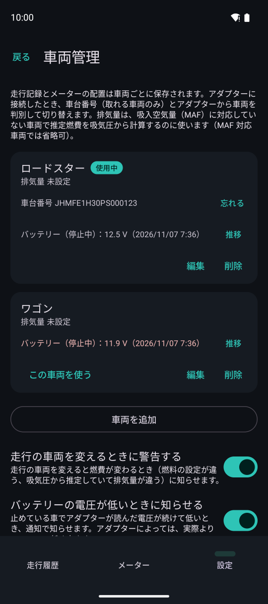
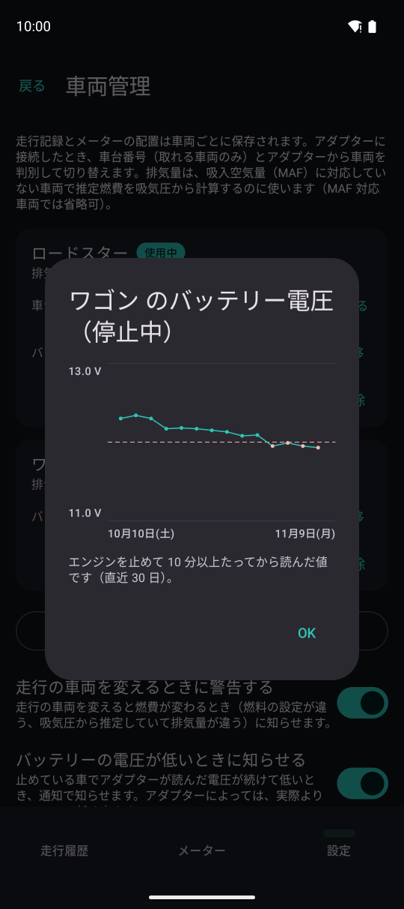

車両とバッテリー
車両ごとに走行記録とメーターの配置を分けて保存します。停止している車のバッテリー電圧も見張ります。

12345設定の「車両管理」ページです。
- 1停止中のバッテリー電圧（最後に読んだ値）
- 2直近 30 日の電圧の推移（プレミアムプラン）
- 3警告の基準より低いと赤で出します
- 4この車両を使う（メーターに出す車両）
- 5電圧が低いときに通知で知らせるか
- 排気量は、吸入空気量（MAF）に対応していない車で推定燃費を吸気圧から計算するのに使います
- ディーゼル車は車両の編集で設定します（燃料の種類が読めない車で燃費の推定に使います）
- アダプターに接続すると、車台番号（取れる車のみ）とアダプターから車両を判別して自動で切り替えます。未知のアダプターに接続するとどの車両か聞きます
- フリープランで登録できる車両は 2 台までです
バッテリー電圧の警告
停止している車でアダプターが読んだ電圧（エンジンを止めて 10 分以上たってから）を記録し、継続して低いと通知で知らせます。
- 低め：基準値以下（12.2・12.0・11.8 V から選べます。既定は 12.0 V）。とても低い：11.6 V 以下
- 1 回だけの計測値では通知しません。24 時間以内に 2 回続けて低かったら通知します
- 通知は同じ車両で 1 日 1 回まで。電圧が 12.4 V 以上に戻るまで、同じ段階では繰り返し通知しません
- アダプターによっては実際より 0.2〜0.3 V 低く出るものがあります。基準を変えて合わせてください
- エンジンがかかっている間の電圧では判定しません

電圧の推移。破線が警告の基準です。